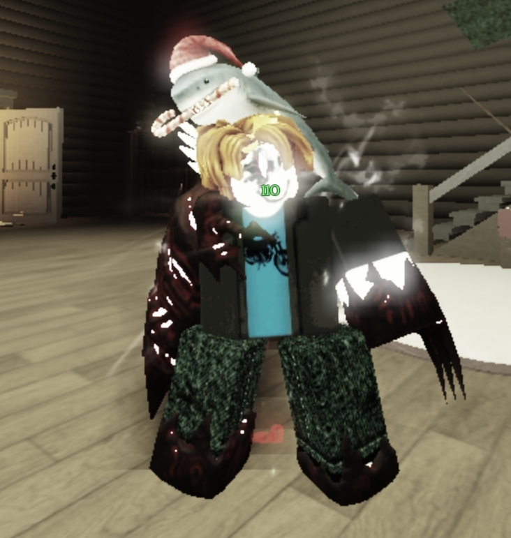

Experiment-124
Information

Experiment-124 is like John doe, Dr.███████████ has found a way to create the same myth but it has a cost to sacrifice somoene. So we kidnap ptitomboss (our target), and we use the necrobloxicon to do it, it kind of worked but some faulty code as appear and corrupt our test subject.. We tried to communicate with it but it didn't work, also they seems to be follow somethings.. like voice. If we can find a way to make them follow our commands, we can use it as an weapon.
Side note: The old name of this experiment was Experiment-Ptitomboss.
Status : Alive
Ability
We have done several test and this is what we conclude:
- Super strength, it can lift up 30kg of steel.
- It can shapeshift, we see that it's avatar always change but it can be easely identify with the corrupt code that is still here.
- Walking and running faster than an average human.
- their corruption have killed two of our immortal experiments.
Those are the things we are unsure:
- could be more intelligent than an normal human but we can't really know because it doesn't really listen to our commands because of the voices probably from the necrobloxicon.
- We haven't run an test to see if it can change gender when it change of appearance.
When there was containment breach:
- 20/1/2024 at 14:30, it has breach the containment, even with our IA model, it has killed over 50 researchers and 10 guards.
- 1/1/2026 at 10:00, it escaped from the containment and 100 researchers were killed in the most gruesome way possible as well as 40 guards.
Video
creation of this experiment
???
First video about Experiment-124
Second video with Experiment-200 that died
Back to the experiments